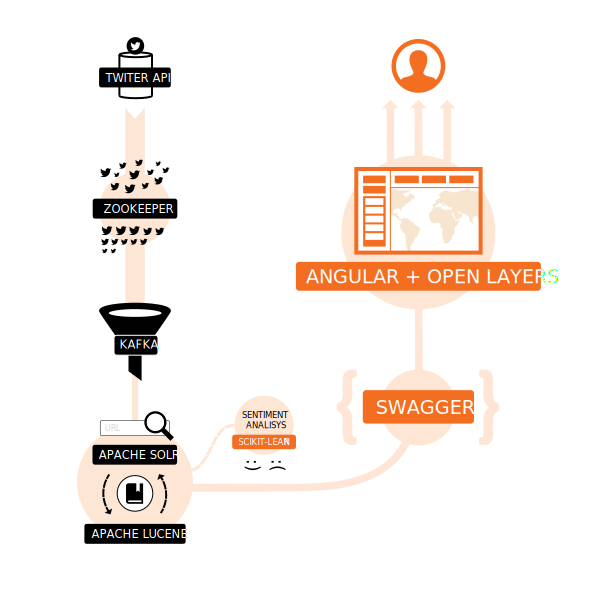

BOP (billion object platform) is an open source solution crafted to help students and researchers at Harvard University access to large collections of spatio-temporal entities. BOP provided a Dataverse platform with an API-accessible big data exploration tool which can support streaming data.
BOP is built on top of a search engine, supports exploration, visualization and extraction via a RESTful API queryable by time, space, text. The first instance of the BOP is loaded with the latest billion geo-tweets, and is fed a real-time stream of about 1 million tweets per day. The system is currently hosted on Massachusetts Open Cloud (MOC), an OpenStack environment with all components deployed in Docker orchestrated by Kontena.
We created an exclusive open source platform to display a responsive UI with spatial heatmap to represent the distribution of results (spatial faceting: results per cell in a grid), it supports temporal histograms (temporal faceting: results per date time range); word clouds as a mechanism to enhance results browsing by topic.
Architecture for the platform is built on a stack consisting of Swagger, OpenLayers, and AngularJS. The system also uses Scikit-learn to enrich the geo-tweets with sentiment and census/admin boundary codes on their way into the system.